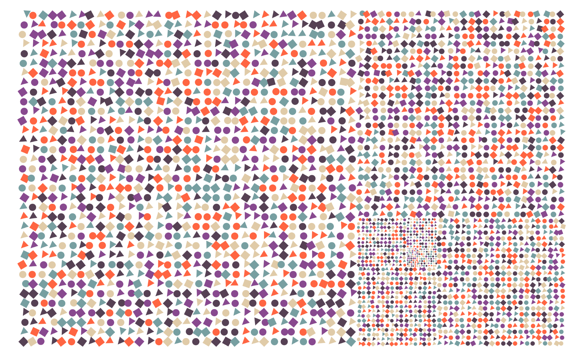

Universo¶
This composition is part of the Dear Gen project.

The prompt Universo was announced without any fanfare,
immediately when we told each other that we had posted the
first challenge, Araucária. It was Régis’s first drawing prompt in
project.
The golden spiral and golden rectangle¶
I knew from the beginning that I would not be exploring ideas related to galaxies and the stars. Instead, I wanted to surprise Régis with another impression of infinity. I got some inspiration after looking into antique maps of the world and stars, and wanted to try something with the golden rectangle and its subdivisions.
The first challenge was to draw the subdivisions. There are some more
sophisticated approaches using scale() command, but I couldn’t get
my head around those, so I tried to reproduce the sequence from the
largest to the smaller squares in a loop, following the movement of
the subdivisions, in relation the previous one - basically drawing one
square, translating, drawing a smaller square etc. In every step, the
size of the rectangle s is divided by φ, getting smaller and
smaller. The algorithm is as follows:
Translate to (0,1). This is the starting point (number 0 in the picture).
Translate by (0,-1).
2.1. Draw a square with side
sand calculates=s/phi.Translate by (φ,0) units. This means 1 unit to the right (positive X), and same position in Y axis. Repeat 2.1
Translate (φ-1,φ) units (going from square 2 to 3 in the picture). Repeat 2.1
Translate (-1,1/φ) units (going from 3 to 4). Repeat 2.1
Repeat steps 2-5 until
sis very small

I put the movements described above in two arrays, one for each axis, and used the modulus functions in the loop.
The calculationi%4returns the rest of the division ofiby 4, meaning it goes for 0 to 3, then back to 0 (see table below). Using the modulus operand for “looping” is a common and useful technique.
| i | 0 | 1 | 2 | 3 | 4 | 5 | 6 | 7 | 8 | 9 | 10 | … |
|---|---|---|---|---|---|---|---|---|---|---|---|---|
| i%4 | 0 | 1 | 2 | 3 | 0 | 1 | 2 | 3 | 0 | 1 | 2 | … |
//the directions in which the subdivisions "move"
moves_x = new float[]{0, +1*phi, phi -1, -1};
moves_y = new float[]{-1, 0, 1*phi, 1/phi};
float x = 0, y = h;
for (int i=0; i<iterations; i++) {
y += h* moves_y[i%4];
x += h * moves_x[i%4];
universe[i] = new Subdivision(x + h/2, y+h/2, h);
h/=phi;
}
To see the output with only the subdivisions drawn, locate and un-comment drawGold().